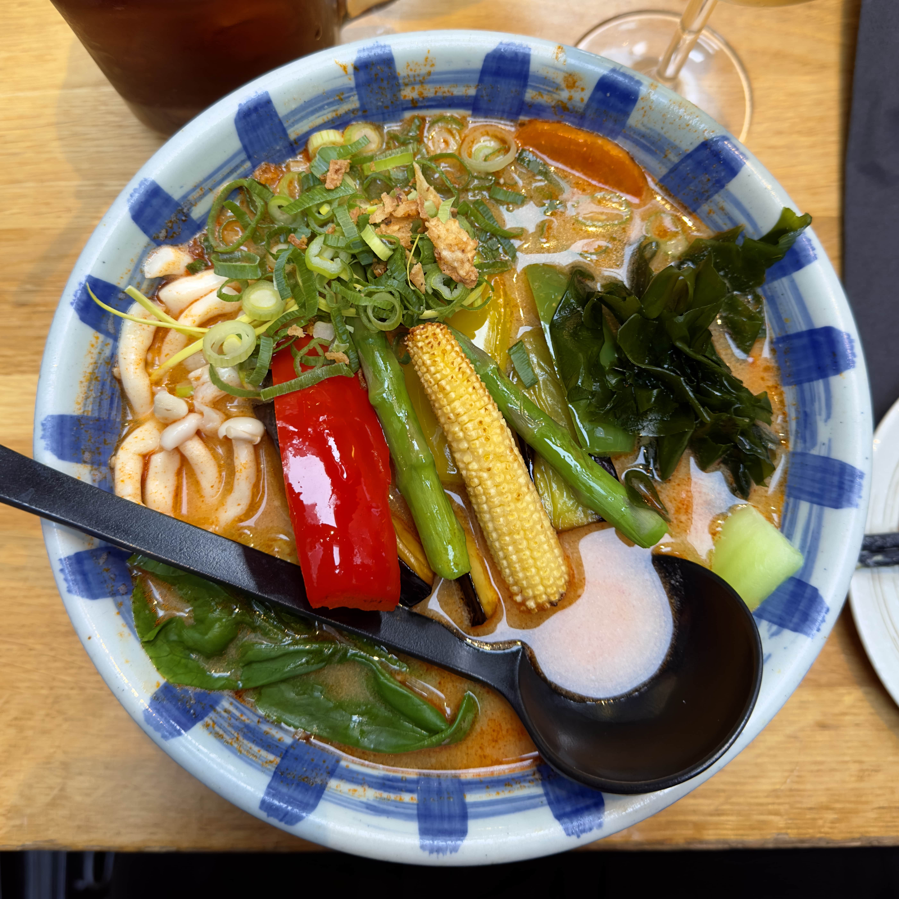

Onze sterren
Je hoeft niet naar een andere wereld te reizen voor vegan ramen. Hier zijn twee stralende plekjes die ons aantrekken en een warm gevoel geven.
Kitchen Impossible

Kitchen Impossible wilt de wereld een betere plek maken met hun
vegan Ramen en doet het onmogelijke door alles plant based te
maken. Het is een klein restaurantje en ze nemen geen
reserveringen aan, het was knus en had een fijne sfeer.
Lees meer
Umaimon

Een populaire ramen restaurant bij Leidseplein. Deze ramen spot
biedt naast de 12 standaard smaken ook 6 vegan opties. Er is dus
voor ieder wat wils en een etentje regelen is dus snel gedaan.
Lees meer
Nog meer om te bezoeken
Ken jij nog vegan ramen spots? Stuur dan gerust een berichtje onderaan de "Ons verhaal" pagina